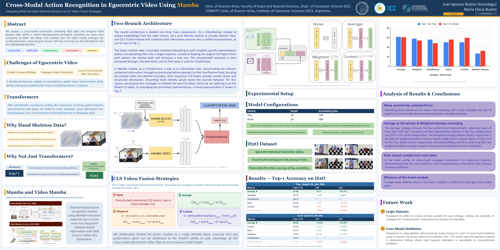

Cartelera de Novedades
Presentación de poster en el Third Joint Egocentric (EgoVis) Workshop (CVPR2026) por Juan Ignacio Bustos Gorostegui.
Fecha: 3 de junio del 2026
Más información
Lo quelas redes neuronales no saben: descubrimiento e interpretando el conocimiento aprendido en redes neuronales convolucionales.
Alumno: Gabriel Baca Rubinztain
Fecha: Jueves 31 de julio a las 17:00hs
Lugar: Aula 1301, Pabellón 0+i
Jurado: Daniel Acevedo y Vicroria Paternostro.
Director: Gabriel Kreiman
Co-director Pablo Negri
Este trabajo aborda el problema de inferir el conocimiento adquirido por una red neuronal convolucional para clasificación de imágenes, sin información previa sobre sus datos de entrenamiento. En particular, se estudia si es posible determinar qué clases fueron utilizadas durante el entrenamiento bajo distintas restricciones sobre el acceso a la arquitectura, los pesos y las salidas de la red.
Se definen seis variantes del problema, que representan escenarios cada vez más generales y desafiantes. Entre los métodos explorados, el análisis de la proporción de activación neuronal en capas Fully Connected combinado con clustering no supervisado mediante K-Means mostró resultados sólidos, alcanzando scores F1 superiores a 0.8 incluso en configuraciones con hasta siete clases de diez no entrenadas.
La principal contribución del trabajo es el desarrollo de un framework basado en DeepDream para la extracción de conocimiento, que es agnóstico al dataset, a la arquitectura del modelo y a la métricas de similitud. Experimentos preliminares con este enfoque alcanzaron scores F1 superiores a 0.95 en MNIST con redes artesanales pequeñas y mostraron desempeños comparables en CIFAR-10 utilizando una ResNet20 pre-entrenada.
Reconocimiento de expresiones faciles en secuencias a través de Citation-kNN y GANs con preservación de la identidad.
Alumno: Andreas Sturmer
Fecha: Jueves 18 de diciembre a las 16:00hs
Lugar: Sala 1604, Pabellón 0+i
Jurado: Gonzalo Fernández Florio y Carlos Orozco.
Directores: Pablo Negri y Daniel Acevedo
En este trabajo proponemos un método de Reconocimiento de Expresiones Faciales para la tarea de One-Shot en secuencias de video. El reconocimiento de las expresiones se aborda mediante la correlación entre las dinámicas de los videos de entrada, que corresponden a una expresión realizada por un sujeto, y una serie de secuencias artificiales generadas por modernas arquitecturas de Redes Neuronales Profundas. La generación de estos cuadros artificiales se logra a través de una Red Generativa Antagónica (GAN). Luego, la expresión de entrada es categorizada a partir de aquella secuencia artificial más similar en el espacio de clasificación.
Se plantea como hipótesis que la correlación dinámica se vería reforzada mediante el uso de arquitecturas de redes neuronales y estrategias que conserven la información de identidad del sujeto de test.
Realizamos experimentos para distintas variantes de representación de las imágenes, enfocándonos en la familia de métodos de 2DLDA, y reportamos métricas para cada expresión.